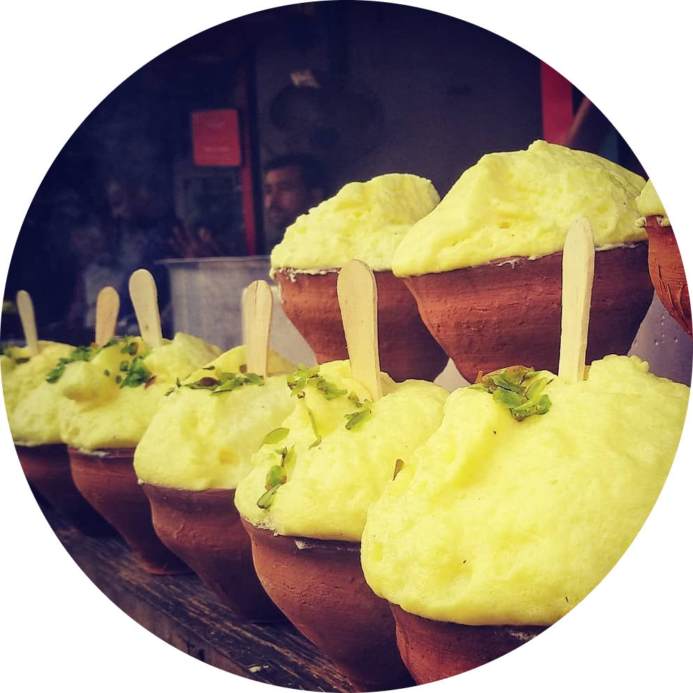

|  | Akash KushawahaMy Contact DetailsJunior Software Engineer at Netradyne. I am a software engineer.I am learning full stack devlopment on Udemy.I am currently working on frontend related issues. |
| Skills | Expertise |
|---|---|
| Programming Languages: | Python,SQL,GNU Octave |
| Python Libraries: | Numpy,panda,Spice |
| Software: | Jira, MS Excel , Google Sheets(Advance), MS Word,MS Power Point,Origin |
| Soft Skills: | Problem-solving Skills,Strong Communication Skills,Adaptibility,Research ,Analytical aproach,Leadership skills |
| Company | Date | Short Discription |
|---|---|---|
| Dhunseri Petrochmical Ltd. | june 2015 | Detail study and Reporting of entire PET granule production, quality Checking and Storage process. |
| Adani Wilmer Ltd | July 2017 to November 2019 | •Worked as Engineer in packaging department in Adani wilmar ltd. •Oversee all the technical and administrative activies during this period. |
| Netradyne | from 1st july 2022-present | worked as software engineer resposible for development and debugging of new reports |